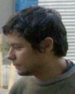

Olá, meu nome é Thiago Nogueira

Sou programador Java. Já fiz alguns projetos em PHP. Nas horas vagas brinco com Python/Django, Ruby/Rails e outras coisas.
Sou Tecnólogo em Análise e Desenvolvimento de Sistemas, pela Universidade Cruzeiro do Sul.
Sou Sun Certified Java Programmer (SCJP).
Não me prendo a uma tecnologia específica. Gosto de estudar novas linguagens, frameworks e ferramentas, que ajudem a fazer meu trabalho de uma forma divertida e com qualidade.
Mantenho um humilde blog, que anda um pouco largado (por pouco tempo).
Atualmente estou a procura de novos desafios profissionais, com disponibilidade em tempo integral para participar de projetos.
Moro em São Paulo, Capital.
Nos links abaixo você encontra detalhes sobre mim.
Meu e-mail de contato é thiagotn@gmail.com